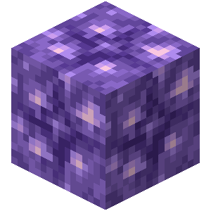
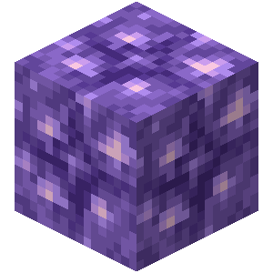

List
Gilded Blackstone
Beacon
Netherite Block
Emerald Ore

Bedrock (there is a glitch)

Budding Amethyst
Emerald Block

Gilded Blackstone
Beacon
Netherite Block
Emerald Ore
Bedrock (there is a glitch)
Budding Amethyst
Emerald Block
First, I'm going to eliminate emerald block, because you can trade with villagers to get it very quickly
That leaves Netherite block, Emerald Ore, Bedrock, Budding Amethyst, Beacon, And Gilded Blackstone
While it is very difficult to obtain in survival, only members of scicraft know how to do the glitch. And bedrock is under no circumstances hard to find.
While it is a big grind to make a nether portal, find a fortress, kill thousands of wither skeletons to get the three heads, get soulsand, kill the wither, smelt five sand, mine three obsidian, and craft the beacon, its not really that rare, just hard to get
While this block still being acceptionally rare, amethyst ball things arent actually that hard to find, and you can either find silk touck or trade with villagers or just getting lucky with enchanting.
Congradulations to gilded blackstone! The reason that (in writer's opinion) gilded blackstone is the third rarest block is because first you have to find the right type of bastion, then you have to find the chests and gilded blackstone near them.
Second place goes to netherite block because first you have to mine thirty-six ancient debris, which is already rare, but then you also need 36 gold ingots and smelt the ancient debris, just to get ONE .
Now you might be wondering "But now there are no more blocks!", but thats because that the rarest block is actually none of the listed ones.
Whaaaaaaaaaaaaaaaaaaaaaaaaaaaaaaaaaaaaaaaaaaaaaaaaaaaaaaaaaaaaaaat? but I thought that you can only get those in crea-NO Thats why its the raret block. You see, there is a one in 1,000,000,000,000,000 chance of a treasure chest spawning in the same block as a mineshaft spawner, which spawns a quintuple pig spawner surrounding an unopenable chest.